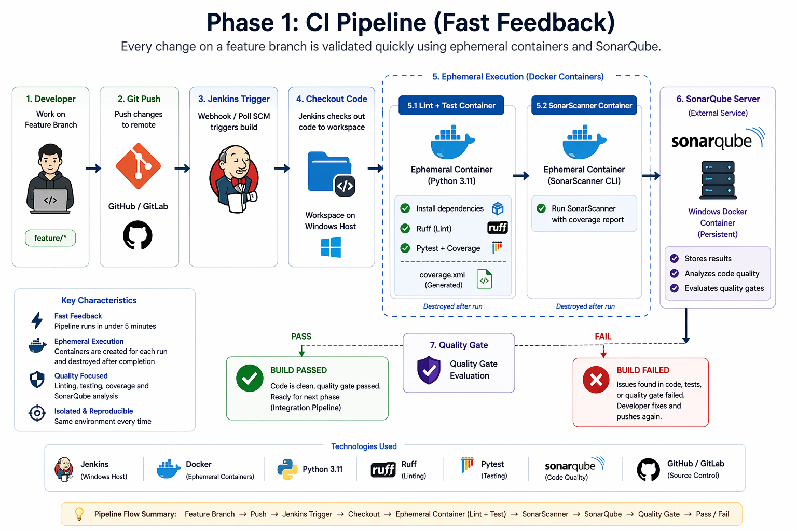

Phase 1: CI Pipeline (Fast Feedback)
Goal
Build a fast, reliable CI pipeline that validates code quality on every push or pull request.
This pipeline should:
- Catch issues early
- Run in under 5 minutes
- Avoid external dependencies
- Provide a simple pass/fail result
Overview
The CI pipeline will include:
- Code checkout
- Dependency installation
- Linting
- Unit testing
- Static analysis (optional but recommended)
Prerequisites
Ensure the following are ready:
- [ ] Git repository (GitHub/GitLab)
- [ ] Jenkins installed and running
- [ ] Python project (FastAPI or similar)
- [ ]
requirements.txtpresent - [ ] Test suite available (
tests/)

Step 1 — Prepare Project Structure
Ensure your project looks like this:
project/
│
├── app/
├── tests/
├── requirements.txt
├── pytest.ini (optional)
├── .flake8 (optional)
└── Jenkinsfile
Step 2 — Add Linting Configuration
Create .flake8 file:
[flake8]
max-line-length = 100
exclude = .git,__pycache__,venv
Step 3 — Add Test Configuration (Optional)
Create pytest.ini:
[pytest]
testpaths = tests
python_files = test_*.py
Step 4 — Create Jenkins Pipeline
Create file: Jenkinsfile
pipeline {
agent any
environment {
VENV = "venv"
}
stages {
stage('Checkout') {
steps {
git branch: 'main', url: 'https://your-repo-url.git'
}
}
stage('Setup Python') {
steps {
sh '''
python3 -m venv $VENV
. $VENV/bin/activate
pip install --upgrade pip
pip install -r requirements.txt
pip install pytest flake8
'''
}
}
stage('Lint') {
steps {
sh '''
. $VENV/bin/activate
flake8 app tests
'''
}
}
stage('Unit Tests') {
steps {
sh '''
. $VENV/bin/activate
pytest --maxfail=1 --disable-warnings -q
'''
}
}
}
post {
success {
echo 'CI Passed'
}
failure {
echo 'CI Failed'
}
}
}
Step 5 — Configure Jenkins Job
In Jenkins UI:
- Create New Item
- Choose Pipeline
-
Configure:
-
Pipeline script from SCM
- Add Git repo URL
- Script path:
Jenkinsfile
Step 6 — Trigger CI
Trigger builds using:
- Git push
- Pull request
- Manual build
Step 7 — Validate Pipeline
Ensure pipeline runs:
Checkout → Setup → Lint → Tests → Result
What This Pipeline Does NOT Do
This is intentional:
- [ ] No Docker builds
- [ ] No database connections
- [ ] No deployment steps
This keeps CI:
- Fast
- Deterministic
- Easy to debug
Outcome
You now have a working CI pipeline that:
- Validates every code change
- Prevents broken code from merging
- Provides fast developer feedback
Best Practices
- Keep tests isolated (no real DB)
- Mock external services
- Fail fast on errors
- Keep logs readable
Final Checklist
- [ ] Code is checked out correctly
- [ ] Dependencies install successfully
- [ ] Linting runs without errors
- [ ] Unit tests pass
- [ ] Pipeline completes in < 5 minutes
Next Phase
Phase 2: Integration Pipeline (Jenkins + Docker)
You will:
- Run your full application stack using Docker
- Test against real services (Postgres, Redis)
- Add health checks before testing
- Validate system behavior instead of isolated code